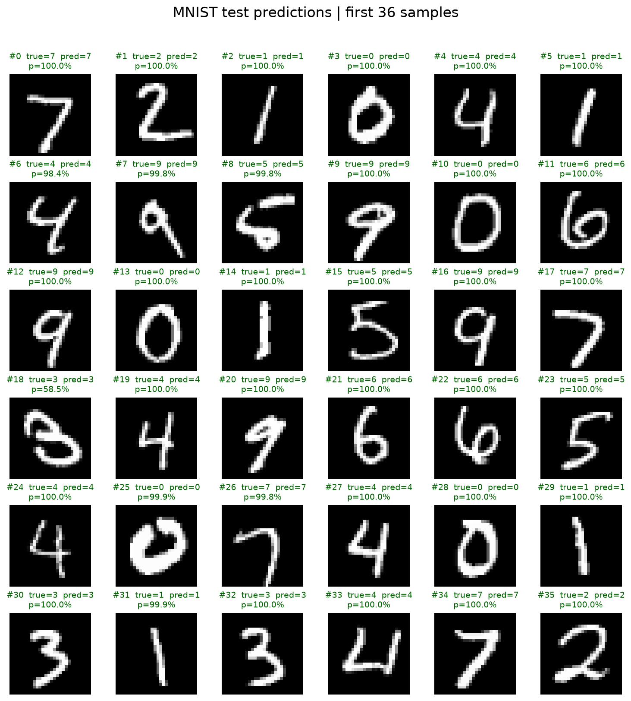
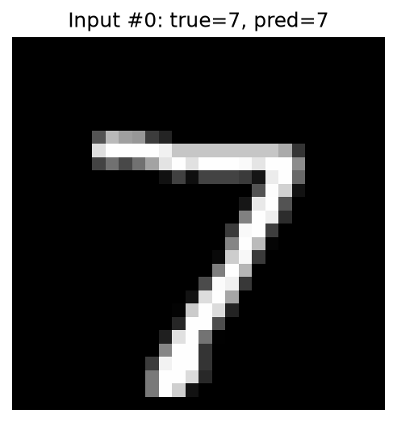
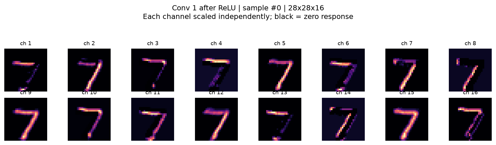
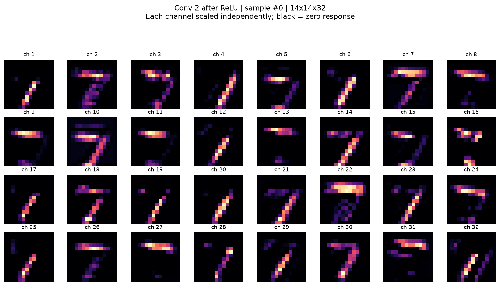
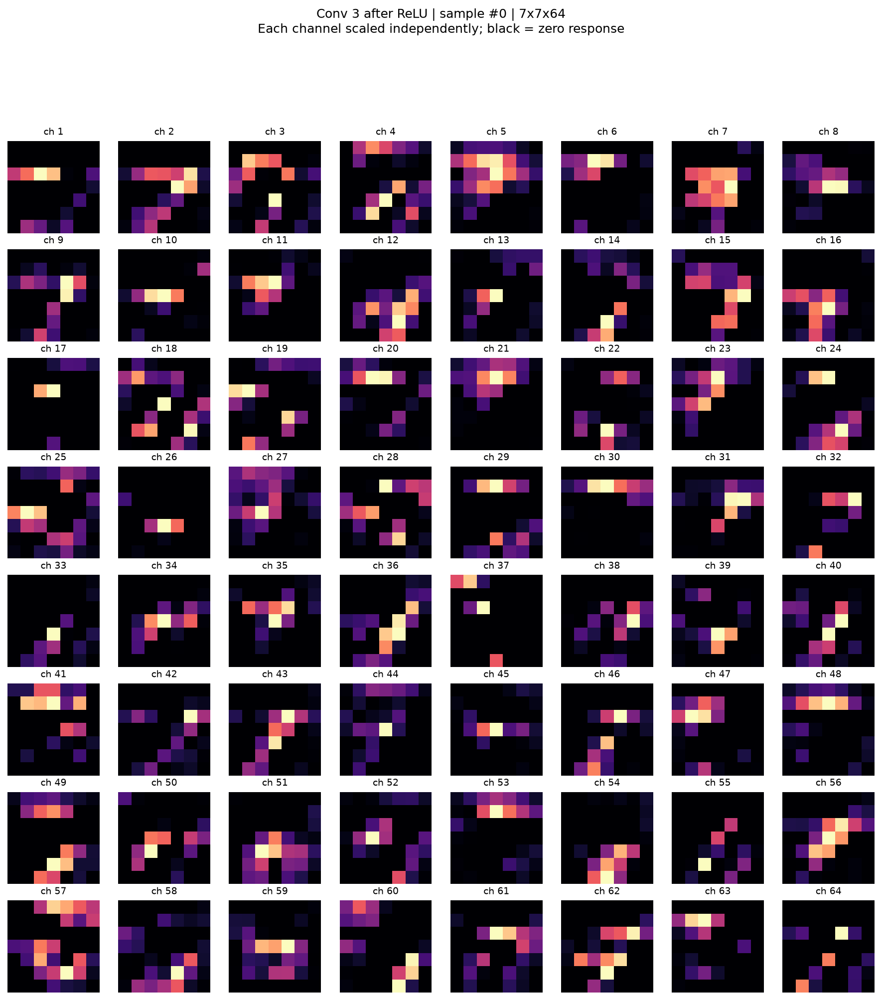
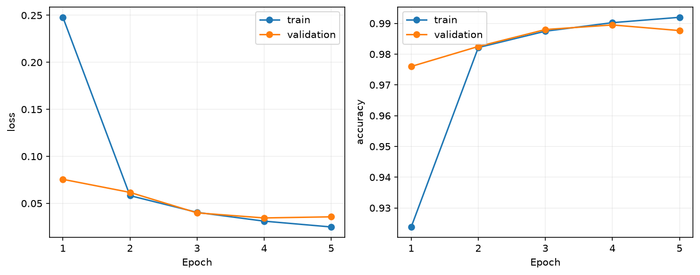
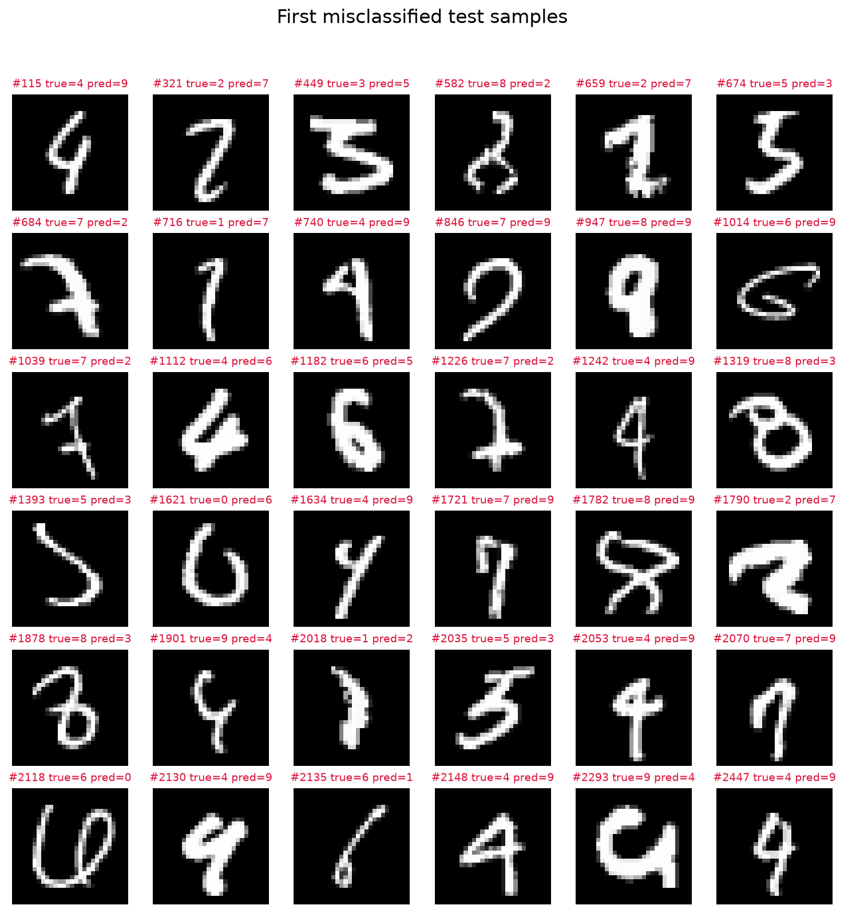

独立测试集：98.99%，正确 9899 / 10000。 训练 54000 张，验证 6000 张，训练 5 轮。
实际参数设备：cuda:0； 物理训练设备：NVIDIA GeForce RTX 5060。
全部 10000 张分类结果 · 训练记录 · 训练后的模型 · 原始特征数值


下图是训练后各卷积层经过 ReLU 的激活特征图，不是各层独立作出的分类。 所有通道均显示；每张小图单独调整显示亮度以看清结构，不能直接比较不同通道的颜色强弱。 黑色表示该位置响应为零。后面的层尺寸更小、通道更多，不保证仍呈现完整数字轮廓。




